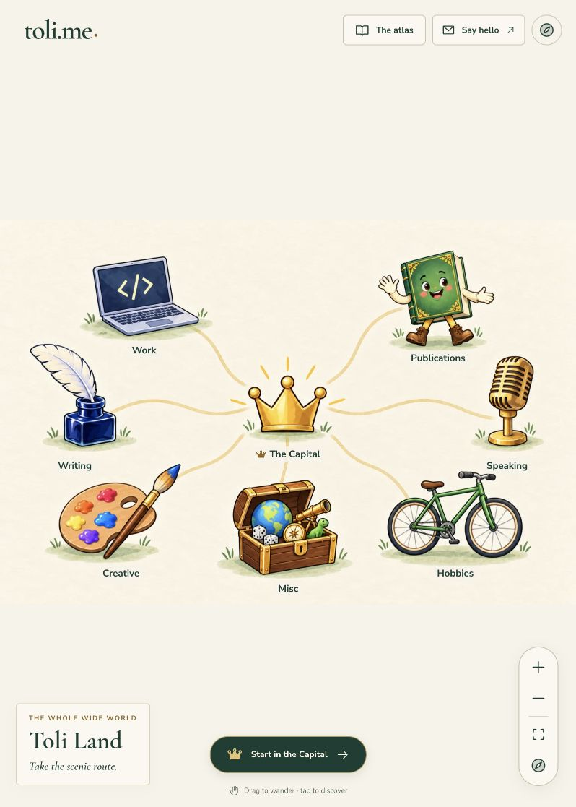
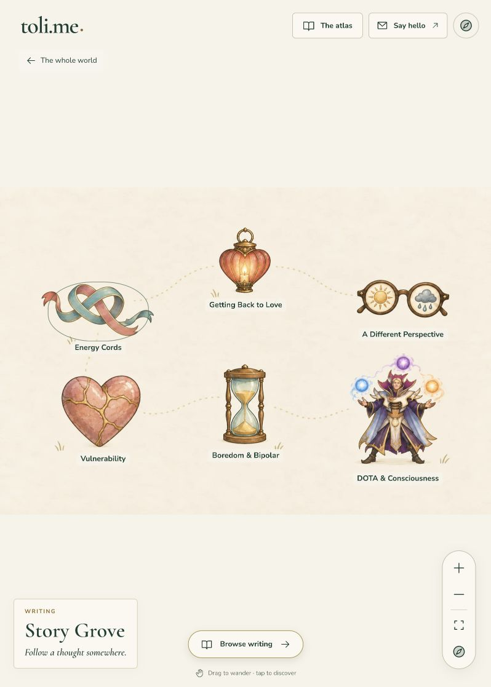
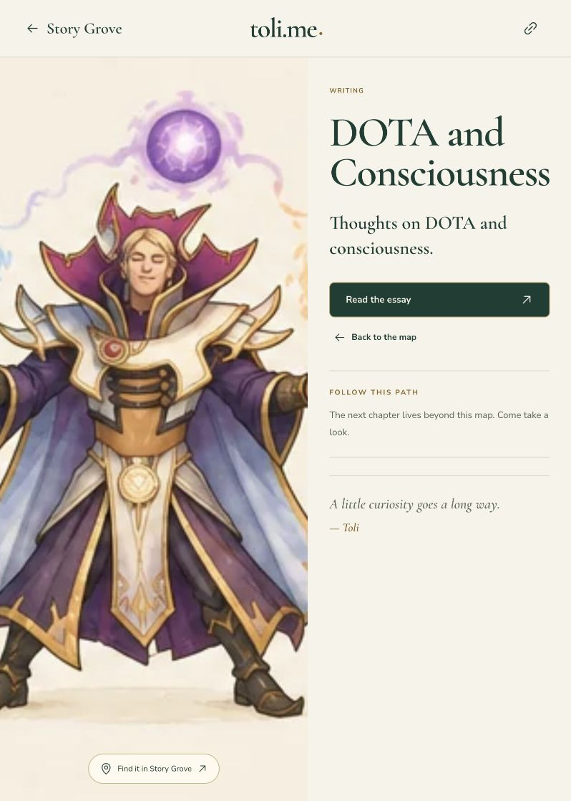
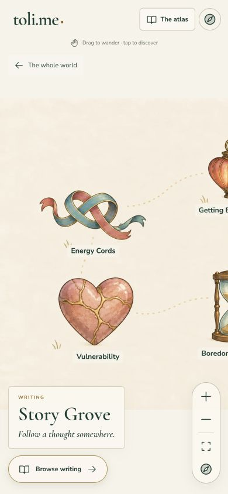
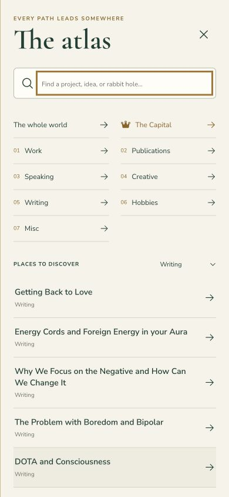

October 3, 2026. Bounded live review of beta.toli.me in the Codex in-app browser. The current 54-entry beta is the evidence; the newly requested 15-destination version has not been implemented.
Recommendation: make a normal scrolling page with visible titles, brief previews, recognizable illustrations and direct reading links the default. Keep the map as an optional “Explore Toli Land” experience. This is the assistant's recommendation in response to Toli's question, not an approved redesign.
The artwork is distinctive and the category labels help. The main friction comes from successive maps, hidden destinations on a phone and an intermediary essay page that adds little information before the actual reading destination.
Health: mixed.
The seven category symbols have readable labels and the Capital offers a starting point. The first view gives no personal introduction or actual project/essay titles. A large share of the screen is blank space or navigation artwork. Zoom controls and “Drag to wander” establish an interaction to learn before browsing content.

Health: mixed.
Selecting Writing opens Story Grove after an animated transition. All six landmarks fit at this viewport; Back and Browse writing are visible. Short labels such as “Vulnerability” and “A Different Perspective” give less information than the actual essay titles, and there are no summaries to help choose. “Story Grove” is decorative vocabulary a visitor has to connect with Writing.

Health: action clear; extra step.
Selecting DOTA & Consciousness opens a large character image, title, generic one-sentence description and “Read the essay” link to Medium. The observed route is World → Writing → essay introduction → external reading link. For this item, the intermediate page offers little substantive context. The external link was inspected but not opened; destination availability and the reading experience were not tested.

Health: high discovery friction.
On returning to Writing at this phone-sized viewport, only Energy Cords and Vulnerability are fully visible. Two more landmarks are partially cut off at the right edge, and the remaining two are off-screen. Panning or zooming is required to discover the whole set. “Browse writing” offers a useful alternative, but it takes another action.
Accessibility risk: spatial exploration and small hint text add demands on low-vision or motor-impaired visitors. The captured accessibility tree exposes named controls and describes keyboard alternatives; this review did not test keyboard operation, screen readers, contrast ratios or reduced-motion behavior, so it does not establish compliance or failure.

Health: useful fallback with excess navigation overhead.
Browse writing opens a searchable atlas filtered to Writing. Full titles are easier to scan. Seven category links and other atlas controls occupy the top portion before the essay list. The default list contains five essays; the accessibility tree also shows an unchecked “Include the after-hours corners” control. The map displayed six landmarks. This filter was not toggled in this review.

For the retained 15 personal destinations, show a short introduction, three or four highlighted works, then Publications, Creative, Writing and Travels in a scrolling layout. Work links to ToliCodes; Dating Bounty remains visible as a separate personal project. Keep original covers, characters and illustrations alongside plain titles and brief descriptions. Reading links should open the writing directly; project pages should exist when they add useful context. Offer “Explore Toli Land” as an optional map mode.
These are design judgments from a bounded walkthrough, not measured user behavior. No usability study, complete content review, loading-performance measurement, outbound-destination audit or full accessibility test was conducted. The viewport override was reset. No application implementation or deployment occurred.